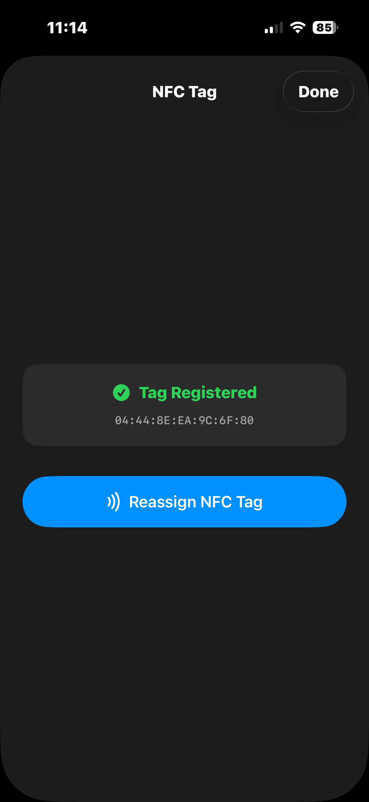
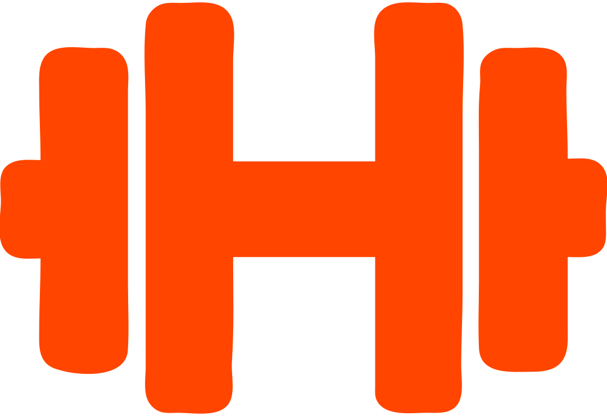
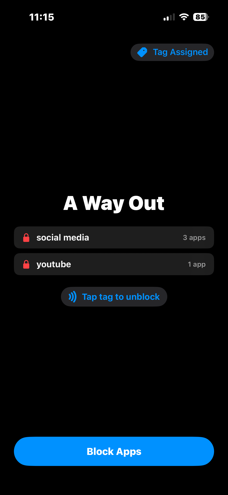
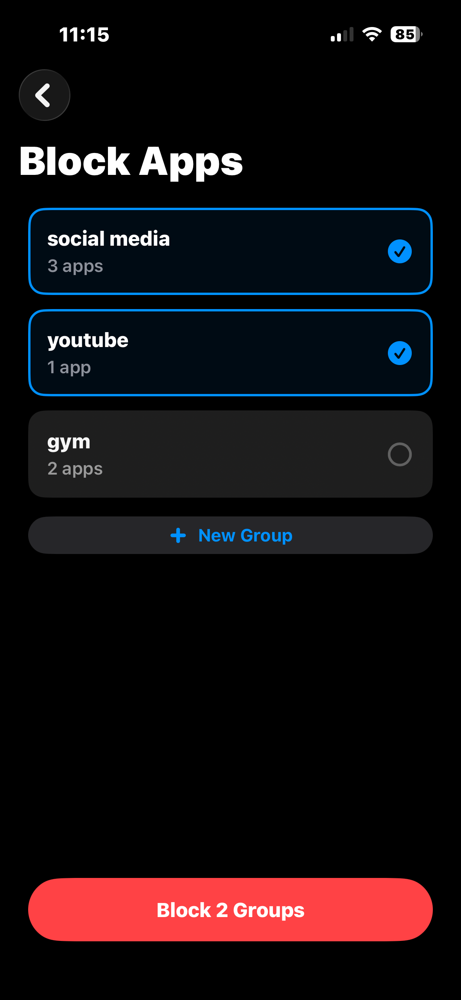
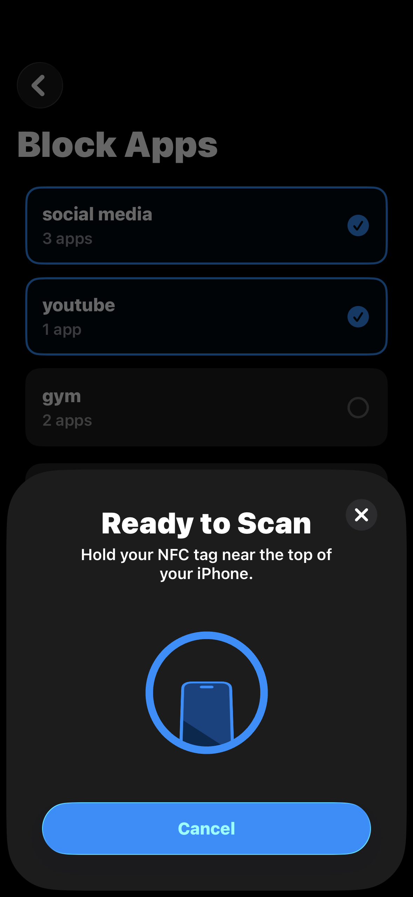
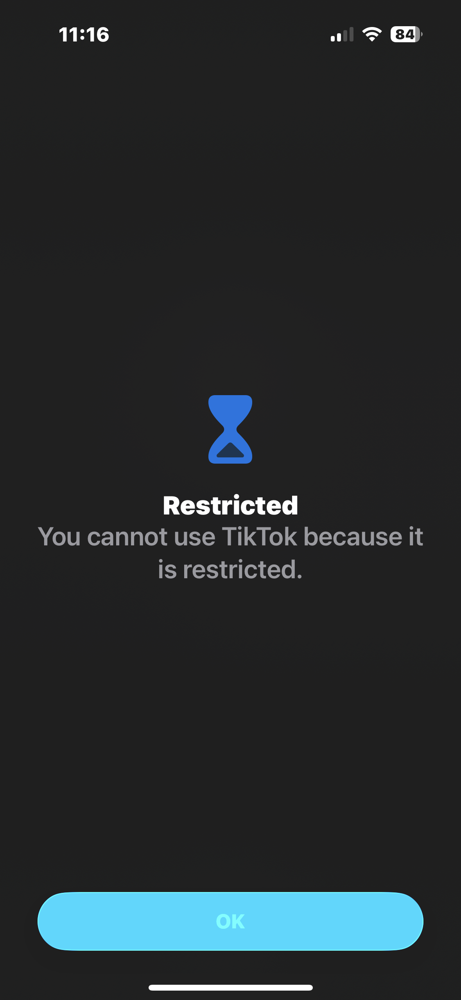

1
Register your tag
Hold any blank NFC tag to your iPhone once and it becomes your physical key — no hardware to buy, and you can reassign it anytime.


ercule Get the App
A Way Out blocks your most distracting apps behind a physical NFC tag
— any blank tag you already own. Leave the tag behind, and there's no
way in. No passcode to remember, no willpower to break.
From the maker of
ercule

Completely free. We don't sell NFC tags — use any blank one you already own — and there are no subscriptions, premium tiers or catches.
Social media companies pour billions into making people more addicted. We're going to war with that — our goal is to free as many people as we can from that addiction. That's why A Way Out will always be free.
Screen Time lets you tap "Ignore Limit" and you're right back in the feed. A Way Out doesn't ask. No button, no passcode, no setting to toggle in a weak moment — the only key is a physical object, and you left it at home.
No "ignore limit," no snooze, no "one more minute." The escape hatch other blockers give you simply does not exist here.
There's nothing you can type from memory at 2am. Willpower is never the thing standing between you and the feed — friction is.
Unlocking requires the specific physical tag you registered. Not a photo of it, not another tag — that one, in your hand.
Blocking runs on Apple's Screen Time engine, shielding apps system-wide. It isn't a flimsy overlay you can swipe away.
Hold any blank NFC tag to your iPhone once and it becomes your physical key — no hardware to buy, and you can reassign it anytime.

Bundle distractions into as many groups as you like — social media, YouTube, games — and lock each one independently with a tap of your tag, behind Apple Screen Time.

Leave the tag at home. The apps stay locked until you physically return and tap it again. That's the whole trick — and it works.

Try to open a blocked app and you get nothing but a Restricted screen — until you're back home with the tag in hand.

The magic is separation: your phone comes with you, the key stays` home.
Block social media and YouTube, then head to the library and leave the tag on your desk at home. For the whole study session, the distractions simply don't open — and you can't talk yourself out of it.
Lock down distracting apps before you leave in the morning and leave the tag behind. At the office there's no unlock, no "just five minutes." Deep work, protected by a door you can't open.
Block the feed before you head to the gym and leave the tag at home. No scrolling between sets, no doom-loop on the treadmill — just the workout you actually showed up for. Want to log it too? That's what we built Hercule for.
A Way Out does exactly one thing: block distracting apps. There's no sign-up, nothing tracking you, and no "insights" screen to fiddle with instead of doing the work.
Turn any NFC tag into the key that keeps your focus — and your phone — in check.
SupportNot published yet — it will be available soon.
Free forever · For iPhone · iOS 17 and later · Requires NFC